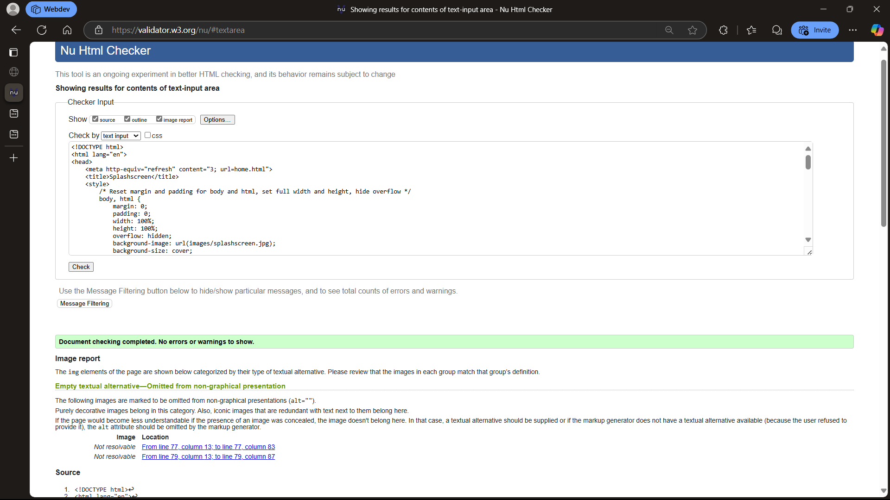
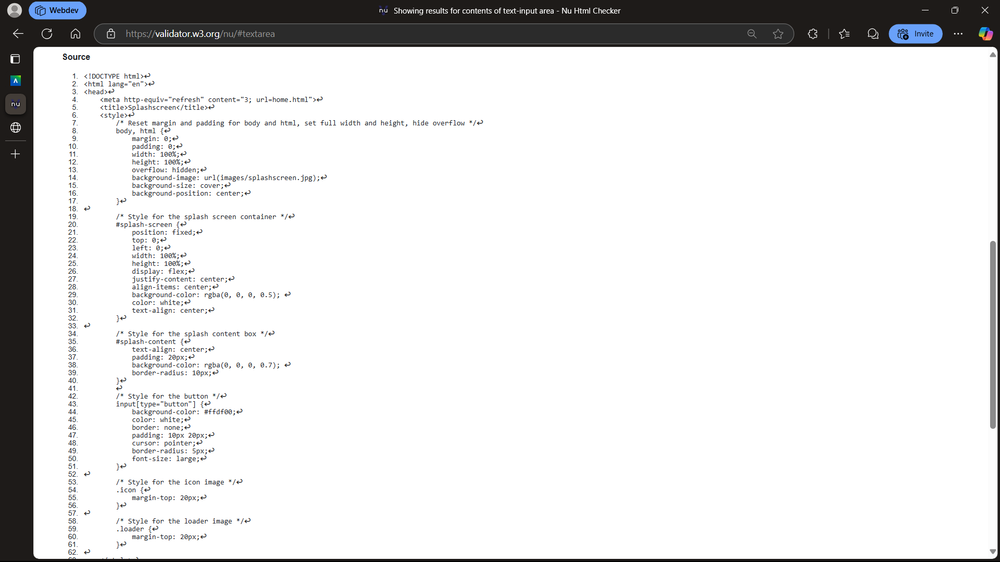
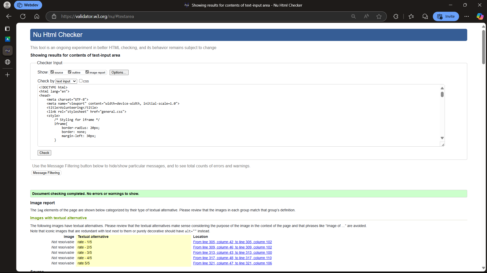
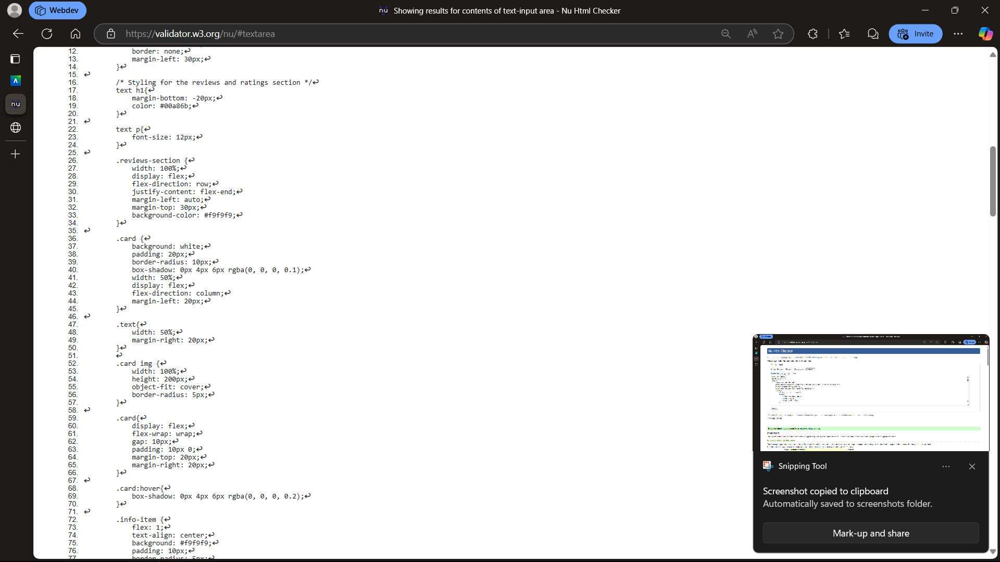
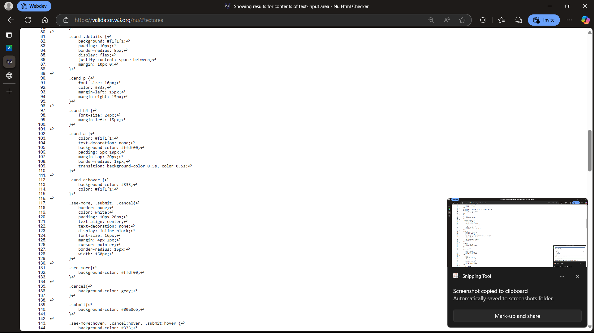
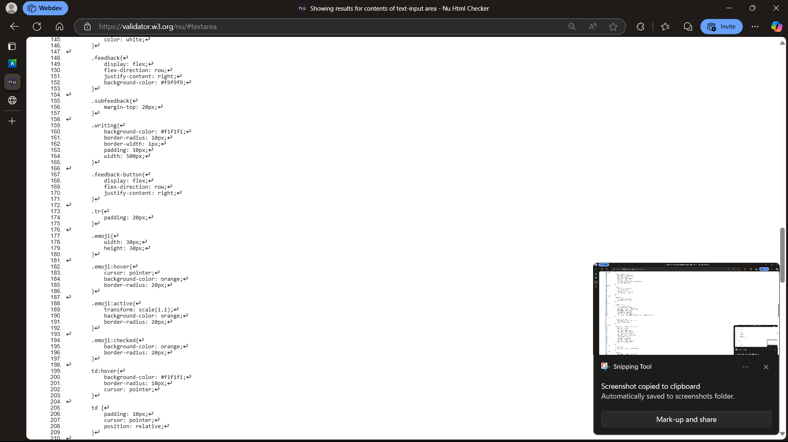
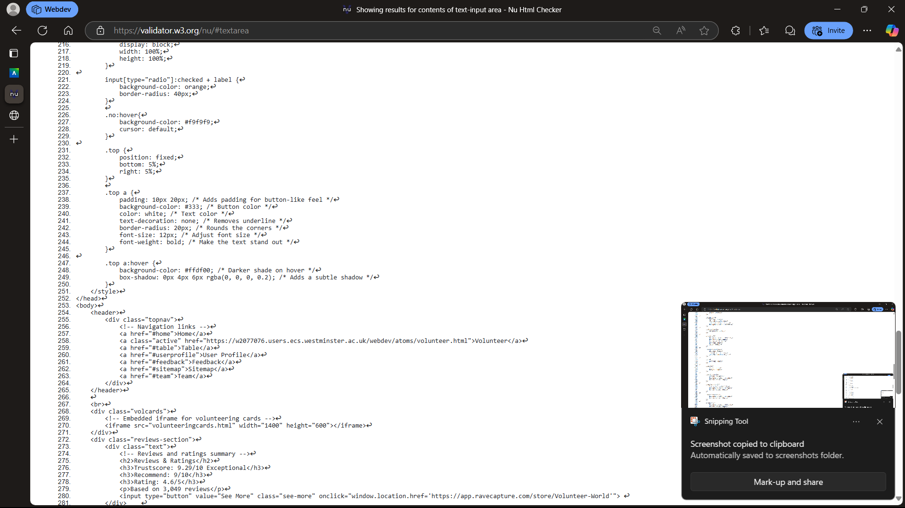
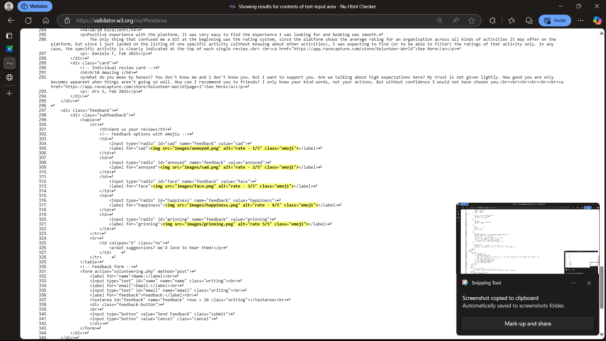
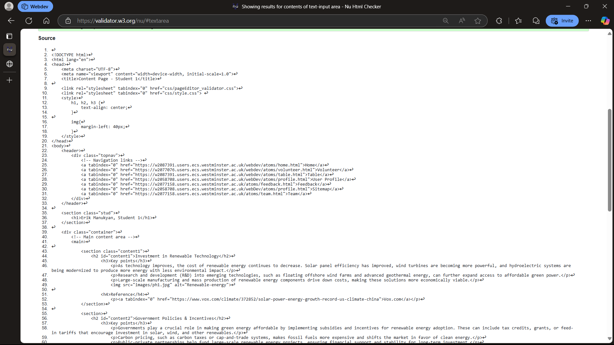
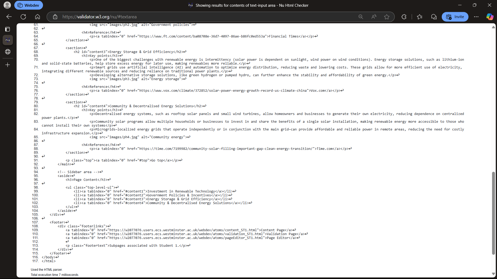

Splash Page validation report
As you can see there are no problems with the code itself and the images that don't have alt tags are purely cosmetic
 Back to Page Editor page
Volunteer Page validation report
Include a short reflection on the validation report for the pages you implemented.
     Back to Page Editor page
Content Page validation report
Include a short reflection on the validation report for the pages you implemented.
 Back to Page Editor page
Include a link back to the corresponding section of the Page Editor.